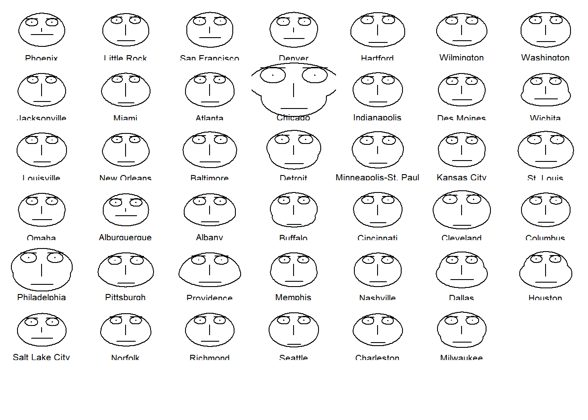
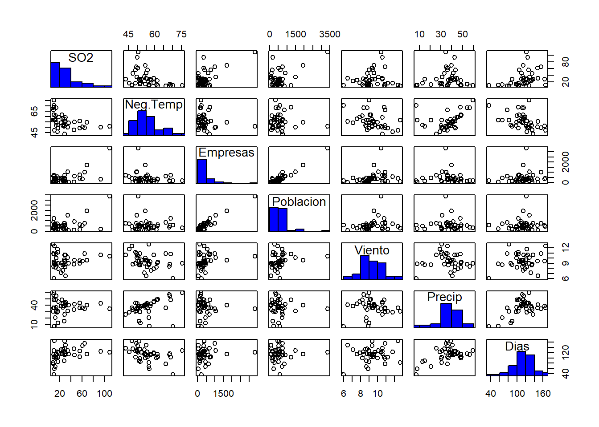
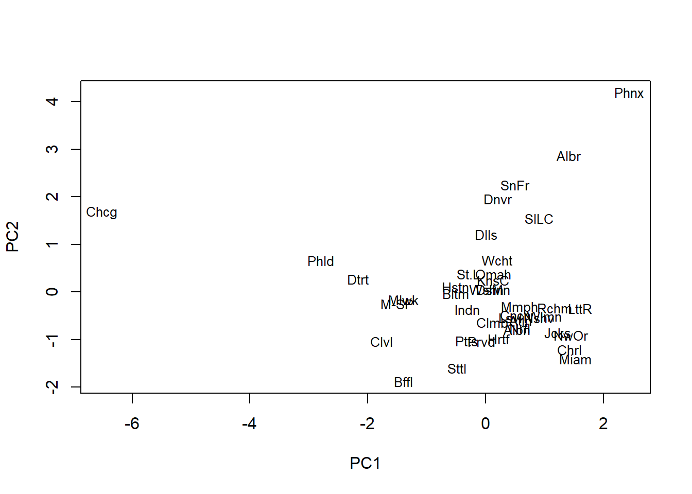

Capítulo 3 Análisis de Componentes Principales (PCA)
Cuando se recoge la información de una muestra de datos, lo más frecuente es tomar el mayor número posible de variables. Sin embargo, si tomamos demasiadas variables sobre un conjunto de objetos, por ejemplo 20 variables, tendremos que considerar \(\binom{20}{2}=180\) posibles coeficientes de correlación; si son 40 variables dicho número aumenta hasta 780. Evidentemente, en este caso es difícil visualizar relaciones entre las variables.
Otro problema que se presenta es la fuerte correlación que muchas veces se presenta entre las variables: si tomamos demasiadas variables (cosa que en general sucede cuando no se sabe demasiado sobre los datos o sólo se tiene ánimo exploratorio), lo normal es que estén relacionadas o que midan lo mismo bajo distintos puntos de vista. Por ejemplo, en estudios médicos, la presión sanguínea a la salida del corazón y a la salida de los pulmones están fuertemente relacionadas.
Se hace necesario, pues, reducir el número de variables. Es importante resaltar el hecho de que el concepto de mayor información se relaciona con el de mayor variabilidad o varianza. Cuanto mayor sea la variabilidad de los datos (varianza) se considera que existe mayor información, lo cual está relacionado con el concepto de entropía. (Entropía de la información: el grado de incertidumbre que existe sobre un conjunto de datos)
3.1 Componentes Principales
Estas técnicas fueron inicialmente desarrolladas por Pearson a finales del siglo XIX y posteriormente fueron estudiadas por Hotelling en los años 30 del siglo XX. Sin embargo, hasta la aparición de los ordenadores no se empezaron a popularizar.
Para estudiar las relaciones que se presentan entre \(p\) variables correlacionadas (que miden información común) se puede transformar el conjunto original de variables en otro conjunto de nuevas variables no correlacionadas entre sí (que no tenga repetición o redundancia en la información) llamado conjunto de componentes principales.
Las nuevas variables son combinaciones lineales de las anteriores y se van construyendo según el orden de importancia en cuanto a la variabilidad total que recogen de la muestra.
De modo ideal, se buscan \(m < p\) variables que sean combinaciones lineales de las \(p\) originales y que no estén correlacionadas, recogiendo la mayor parte de la información o variabilidad de los datos.
Si las variables originales no están correlacionadas de origen, entonces no tiene sentido realizar un análisis de componentes principales.
El análisis de componentes principales es una técnica matemática que no requiere la suposición de normalidad multivariante de los datos, aunque si esto último se cumple se puede dar una interpretación más profunda de dichos componentes.
3.2 Cálculo de los Componentes Principales
Se considera una serie de variables \((x_1, x_2, \dots, x_p)\) sobre un grupo de objetos o individuos y se trata de calcular, a partir de ellas, un nuevo conjunto de variables \(y_1, y_2, \dots, y_p\) no correlacionadas entre sí, cuyas varianzas vayan decreciendo progresivamente.
Cada \(y_j\) (donde \(j = 1, \dots, p\)) es una combinación lineal de las \(x_1, x_2, \dots, x_p\) originales, es decir:
\[y_j = a_{j1}x_1 + a_{j2}x_2 + \dots + a_{jp}x_p = a_j'x\]
siendo \(a_j' = (a_{1j}, a_{2j}, \dots, a_{pj})\) un vector de constantes, y
\[x = \begin{bmatrix} x_1 \\ \vdots \\ x_p \end{bmatrix}\]
Obviamente, si lo que queremos es maximizar la varianza, como veremos luego, una forma simple podría ser aumentar los coeficientes \(a_{ij}\). Por ello, para mantener la ortogonalidad de la transformación se impone que el módulo del vector \(a_j' = (a_{1j}, a_{2j}, \dots, a_{pj})\) sea \(1\). Es decir:
\[a_j'a_j = \sum_{k=1}^{p} a_{kj}^2 = 1\]
El primer componente se calcula eligiendo \(a_1\) de modo que \(y_1\) tenga la mayor varianza posible, sujeta a la restricción de que \(a_1'a_1 = 1\). El segundo componente principal se calcula obteniendo \(a_2\) de modo que la variable obtenida, \(y_2\), no esté correlacionada con \(y_1\).
Del mismo modo se eligen \(y_1, y_2, \dots, y_p\) no correlacionados entre sí, de manera que las variables aleatorias obtenidas vayan teniendo cada vez menor varianza.
3.2.1 Proceso de extracción de factores
Queremos elegir \(a_1\) de modo que se maximice la varianza de \(y_1\) sujeta a la restricción de que \(a_1'a_1 = 1\):
\[\text{Var}(y_1) = \text{Var}(a_1'x) = a_1'\Sigma a_1\]
El método habitual para maximizar una función de varias variables sujeta a restricciones es el método de los multiplicadores de Lagrange.
El problema consiste en maximizar la función \(a_1'\Sigma a_1\) sujeta a la restricción \(a_1'a_1 = 1\). Se puede observar que la incógnita es precisamente \(a_1\) (el vector desconocido que nos da la combinación lineal óptima).
Así, construyo la función \(L\):
\[L(a_1) = a_1'\Sigma a_1 - \lambda(a_1'a_1 - 1)\]
y busco el máximo, derivando e igualando a 0:
\[\frac{\partial L}{\partial a_1} = 2\Sigma a_1 - 2\lambda I a_1 = 0 \implies (\Sigma - \lambda I)a_1 = 0\]
Esto es, en realidad, un sistema lineal de ecuaciones. Por el teorema de Rouché-Frobenius, para que el sistema tenga una solución distinta de 0 la matriz \((\Sigma - \lambda I)\) tiene que ser singular. Esto implica que el determinante debe ser igual a cero:
\[|\Sigma - \lambda I| = 0\]
y de este modo, \(\lambda\) es un valor propio de \(\Sigma\). La matriz de covarianzas \(\Sigma\) es de orden \(p\) y si además es definida positiva, tendrá \(p\) valores propios distintos, \(\lambda_1, \lambda_2, \dots, \lambda_p\) tales que \(\lambda_1 > \lambda_2 > \dots > \lambda_p\).
Se tiene que:
\[\Sigma a_1 - \lambda I a_1 = 0 \implies \Sigma a_1 = \lambda a_1\]
\[\text{Var}(y_1) = \text{Var}(a_1'x) = a_1'\Sigma a_1 = a_1'\lambda I a_1 = \lambda a_1'a_1 = \lambda \cdot 1 = \lambda\]
Luego, para maximizar la varianza de \(y_1\) se tiene que tomar el mayor valor propio, digamos \(\lambda_1\), y el correspondiente vector propio \(a_1\).
Si \(a_1' = (a_{11}, a_{12}, \dots, a_{1p})\), entonces:
\[y_1 = a_1'x = a_{11}x_1 + a_{12}x_2 + \dots + a_{1p}x_p\]
El segundo componente principal, digamos \(y_2 = a_2'x\), se obtiene mediante un argumento parecido, requiriendo que \(\text{Cov}(y_2, y_1) = 0\):
\[\text{Cov}(y_2, y_1) = \text{Cov}(a_2'x, a_1'x) = a_2' E[(x-\mu)(x-\mu)'] a_1 = a_2'\Sigma a_1 = 0\]
Como \(\Sigma a_1 = \lambda a_1\), esto equivale a:
\[a_2'\Sigma a_1 = a_2'\lambda a_1 = \lambda a_2'a_1 = 0 \implies a_2'a_1 = 0\]
es decir, que los vectores sean ortogonales.
Para maximizar \(\text{Var}(y_2) = a_2'\Sigma a_2\) sujeta a \(a_2'a_2 = 1\) y \(a_2'a_1 = 0\), se toma la función:
\[L(a_2) = a_2'\Sigma a_2 - \lambda(a_2'a_2 - 1) - \delta a_2'a_1\]
Derivando respecto a \(a_2\):
\[\frac{\partial L(a_2)}{\partial a_2} = 2\Sigma a_2 - 2\lambda a_2 - \delta a_1 = 0\]
Multiplicando por \(a_1'\), obtenemos \(\delta = 0\), con lo que la ecuación se reduce a:
\[(\Sigma - \lambda I)a_2 = 0\]
Elegimos \(\lambda\) como el segundo mayor valor propio de la matriz \(\Sigma\) con su vector propio asociado \(a_2\).
Extendiendo este razonamiento, todos los componentes \(y\) se expresan como:
\[y = Ax\]
donde:
\[y = \begin{bmatrix} y_1 \\ y_2 \\ \vdots \\ y_p \end{bmatrix}, \quad A = \begin{bmatrix} a_{11} & a_{12} & \dots & a_{1p} \\ a_{21} & a_{22} & \dots & a_{2p} \\ \vdots & \vdots & \ddots & \vdots \\ a_{p1} & a_{p2} & \dots & a_{pp} \end{bmatrix}, \quad x = \begin{bmatrix} x_1 \\ x_2 \\ \vdots \\ x_p \end{bmatrix}\]
La matriz de covarianzas de \(y\) será:
\[\Lambda = \begin{bmatrix} \lambda_1 & 0 & \dots & 0 \\ 0 & \lambda_2 & \dots & 0 \\ \vdots & \vdots & \ddots & \vdots \\ 0 & 0 & \dots & \lambda_p \end{bmatrix}\]
Adicionalmente:
\[\Lambda = \text{Var}(y) = A'\text{Var}(x)A = A'\Sigma A \implies \Sigma = A\Lambda A'\]
ya que \(A\) es una matriz ortogonal (\(AA' = I\)).
*NOTA SOBRE VALORES Y VECTORES PROPIOS: Una matriz puede ser vista como una función que transforma un vector en otro. Sin embargo, algunos vectores tienen una particularidad especial: al ser transformados por una matriz, no cambian de dirección, solo se estiran o comprimen. Estos son conocidos como vectores propios.
Los valores propios, por otro lado, son los factores escalares que nos indican cuánto se estira o comprime un vector propio durante la transformación. En términos más simples, si un vector propio es un vector que no cambia de dirección, el valor propio es el número que describe cómo de «grande» o «pequeño» se hace ese vector al ser multiplicado por la matriz.*
3.3 Porcentajes de Variabilidad
La varianza total de los componentes es:
\[\sum_{i=1}^{p} \text{Var}(y_i) = \sum_{i=1}^{p} \lambda_i = \text{traza}(\Lambda)\]
Por propiedades de la traza:
\[\text{traza}(\Lambda) = \text{traza}(A'\Sigma A) = \text{traza}(\Sigma A'A) = \text{traza}(\Sigma) = \sum_{i=1}^{p} \text{Var}(x_i)\]
Es decir, la suma de las varianzas de las variables originales y la suma de las varianzas de las componentes son iguales. Esto permite hablar del porcentaje de varianza total que recoge un componente principal específico.
Entonces el porcentaje de varianza total recogido por el \(i\)-ésimo componente es:
\[\frac{\lambda_i}{\sum_{i=1}^{p} \lambda_i} = \frac{\lambda_i}{\sum_{i=1}^{p} \text{Var}(x_i)}\]
Y la variabilidad acumulada por los primeros \(m\) componentes (\(m < p\)) se calcula como:
\[\frac{\sum_{i=1}^{m} \lambda_i}{\sum_{i=1}^{p} \text{Var}(x_i)}\]
En la práctica, al tener en principio p variables, nos quedaremos con un número mucho menor de componentes que recoja un porcentaje amplio de la variabilidad total \(\sum_{i=1}^{p} \text{Var}(x_i)\)
3.4 Cálculo de los Componentes Principales a partir de la Matriz de Correlaciones
Habitualmente se calculan los componentes sobre variables originales estandarizadas (media 0, varianza 1), lo que equivale a calcularlos a partir de la matriz de correlaciones. Esto da igual importancia a todas las variables originales.
Los componentes son los vectores propios de la matriz de correlaciones y son distintos de los de la matriz de covarianzas. Si se actúa así, se da igual importancia a todas las variables originales.
En la matriz de correlaciones todos los elementos de la diagonal son iguales a 1. Si las variables originales están estandarizadas, esto implica que su matriz de covarianzas es igual a la de correlaciones, con lo que la variabilidad total (la traza) es igual al número total de variables \(p\).
Por lo tanto la proporción de varianza explicada por el \(j\)-ésimo componente será:
\[\frac{\lambda_j}{p}\]
3.5 Matriz Factorial
En algunos programas como SPSS, los vectores propios se reescalan multiplicándolos por su correspondiente raíz del valor propio (\(\sqrt{\lambda_j}\)):
\[a_j^* = \lambda_j^{1/2} a_j \quad \text{para } j = 1, \dots, p\]
De este modo, se suele presentar una tabla de vectores propios \(a_{j}^{*}\) que forman la matriz factorial \(F\):
\[F = (a_{1}^*, a_{2}^*, \dots, a_{p}^*)\]
Si se eleva al cuadrado cada una de las columnas y se suman los términos se obtienen los valores propios (porque \(a_{j}' a_{j} = 1\)):
\[a_{j}^{*'} a_{j}^* = \lambda_{j}^{1/2} \cdot \lambda_{j}^{1/2} a_{j}' a_{j} = \lambda_{j}\]
Por otro lado, como \(\Sigma = A \Lambda A'\) y si se presenta como matriz factorial a \(F = A \Lambda^{1/2}\), se tiene que:
\[\Sigma = F F'\]
Los elementos de \(F\) son tales que los mayores valores indican una mayor importancia a la hora de definir un componente.
Otra manera de verlo es considerar que como \(y = A x\), entonces \(x = A^{-1} y\), de modo que:
\[\text{Cov}(x) = (A^{-1}) \text{Cov}(y) (A^{-1})' = A \Lambda A' = A \Lambda^{1/2} \Lambda^{1/2} A' = F F'\]
ya que al ser \(A\) ortogonal, resulta que \(A^{-1} = A'\).
Así, dada la matriz factorial \(F\), se pueden calcular las covarianzas de las variables originales, es decir, se puede recuperar la matriz de covarianzas original a partir de la matriz factorial. Si se toma un número menor de factores (\(m < p\)), se podrá reproducir aproximadamente \(\Sigma\).
3.5.1 Cálculo de las covarianzas y correlaciones entre las variables originales y los factores
Como se tenía que \(x = A^{-1} y = A' y\), por ser \(A\) ortogonal, entonces:
\[\text{Cov}(y_{j}, x_{i}) = \text{Cov}\left(y_{j}, \sum_{k=1}^{p} a_{ik} y_{k}\right) = a_{ij} \text{Var}(y_{j}) = \lambda_{j} a_{ij}\]
donde \(y_{j}\) es el factor \(j\)-ésimo y \(x_{i}\) es la variable original \(i\)-ésima.
Si suponemos que las variables originales están estandarizadas (\(\text{Var}(x_{i}) = 1\) para \(i = 1, \dots, p\)), entonces:
\[\text{Cor}(y_{j}, x_{i}) = \frac{\lambda_{j} a_{ij}}{1 \cdot \lambda_{j}^{1/2}} = \lambda_{j}^{1/2} a_{ij}\]
De este modo, la matriz de correlaciones entre \(y\) y \(x\) es:
\[\text{Cor}(y, x) = \Lambda^{1/2} A' = F'\]
con lo que la matriz factorial también mide las correlaciones entre las variables originales estandarizadas y los nuevos factores.
3.5.2 Cambios de escalas e identificación de componentes
Si las variables originales \(x_{1}, \dots, x_{p}\) no están correlacionadas de origen, entonces carece de sentido calcular unos componentes principales. Si se hiciera, se obtendrían exactamente las mismas variables pero reordenadas de mayor a menor varianza. Para saber si \(x_{1}, \dots, x_{p}\) están correlacionadas, se puede calcular la matriz de correlaciones aplicándose posteriormente el test de esfericidad de Bartlett.
El cálculo de los componentes principales de una serie de variables \(x_{1}, \dots, x_{p}\) depende normalmente de las unidades de medida empleadas. Si transformamos las unidades de medida, lo más probable es que cambien a su vez los componentes obtenidos.
Una solución frecuente que ya se ha mencionado es usar variables \(x_{1}, \dots, x_{p}\) estandarizadas. Con ello, se eliminan las diferentes unidades de medida y se consideran todas las variables implícitamente equivalentes en cuanto a la información recogida.
3.5.3 Identificación de los componentes principales
Uno de los objetivos del cálculo de componentes principales es la identificación de los mismos, es decir, averiguar qué información de la muestra resumen. Sin embargo, este es un problema difícil que a menudo resulta subjetivo. Habitualmente, se conservan sólo aquellos componentes que recogen la mayor parte de la variabilidad, hecho que permite representar los datos según dos o tres dimensiones si se conservan dos o tres ejes factoriales, pudiéndose identificar entonces grupos naturales entre las observaciones.
3.6 Ejemplo: Contaminación Atmosférica en Ciudades de EE. UU.
Se dispone de una muestra de 41 ciudades de USA en las que se midieron diferentes variables relacionadas con la contaminación atmosférica.
Las variables son:
— Contenido en SO2
— Temperatura anual en grados F.
— Número de empresas mayores de 20 trabajadores.
— Población (en miles de habitantes).
— Velocidad media del viento.
— Precipitación anual media.
— Días lluviosos al año.
Interesa investigar la relación entre la concentración en SO2 y el resto de variables, para eliminar relaciones entre las variables se desea emplear un análisis de componentes principales.
# Carga de datos de la muestra de 41 ciudades
datos <- data.frame(
SO2 = c(10, 13, 12, 17, 56, 36, 29, 14, 10, 24, 110, 28, 17, 8, 30, 9, 47, 35, 29, 14, 56, 14, 11, 46, 11, 23, 65, 26, 69, 61, 94, 10, 18, 9, 10, 28, 31, 26, 29, 31, 16),
Neg.Temp = c(70.3, 61.0, 56.7, 51.9, 49.1, 54.0, 57.3, 68.4, 75.5, 61.5, 50.6, 52.3, 49.0, 56.6, 55.6, 68.3, 55.0, 49.9, 43.5, 54.5, 55.9, 51.5, 56.8, 47.6, 47.1, 54.0, 49.7, 51.5, 54.6, 50.4, 50.0, 61.6, 59.4, 66.2, 68.9, 51.0, 59.3, 57.8, 51.1, 55.2, 45.7),
Empresas = c(213, 91, 453, 454, 412, 80, 434, 136, 207, 368, 3344, 361, 104, 125, 291, 204, 625, 1064, 699, 381, 775, 181, 46, 44, 391, 462, 1007, 266, 1692, 347, 343, 337, 275, 641, 721, 137, 96, 197, 379, 35, 569),
Poblacion = c(582, 132, 716, 515, 158, 80, 757, 529, 335, 497, 3369, 746, 201, 277, 593, 361, 905, 1513, 744, 507, 622, 347, 244, 116, 463, 453, 751, 540, 1950, 520, 179, 624, 448, 844, 1233, 176, 308, 299, 531, 71, 717),
Viento = c(6.0, 8.2, 8.7, 9.0, 9.0, 9.0, 9.3, 8.8, 9.0, 9.1, 10.4, 9.7, 11.2, 12.7, 8.3, 8.4, 9.6, 10.1, 10.6, 10.0, 9.5, 10.9, 8.9, 8.8, 12.4, 7.1, 10.9, 8.6, 9.6, 9.4, 10.6, 9.2, 7.9, 10.9, 10.8, 8.7, 10.6, 7.6, 9.4, 6.5, 11.8),
Precip = c(7.05, 48.52, 20.66, 12.95, 43.37, 40.25, 38.89, 54.47, 59.80, 48.34, 34.44, 38.74, 30.85, 30.58, 43.11, 56.77, 41.31, 30.96, 25.94, 37.00, 35.89, 30.18, 7.77, 33.36, 36.11, 39.04, 34.99, 37.01, 39.93, 36.22, 42.75, 49.10, 46.00, 35.94, 48.19, 15.17, 44.68, 42.59, 38.79, 40.75, 29.07),
Dias = c(36, 100, 67, 86, 127, 114, 111, 116, 128, 115, 122, 121, 103, 82, 123, 113, 111, 129, 137, 99, 105, 98, 58, 135, 166, 132, 155, 134, 115, 147, 125, 105, 119, 78, 103, 89, 116, 115, 164, 148, 123)
)
dimnames(datos)[[1]]<- c("Phoenix", "Little Rock", "San Francisco", "Denver", "Hartford",
"Wilmington", "Washington", "Jacksonville", "Miami", "Atlanta",
"Chicago", "Indianapolis", "Des Moines", "Wichita", "Louisville",
"New Orleans", "Baltimore", "Detroit", "Minneapolis-St. Paul",
"Kansas City", "St. Louis", "Omaha", "Alburquerque", "Albany",
"Buffalo", "Cincinnati", "Cleveland", "Columbus", "Philadelphia",
"Pittsburgh", "Providence", "Memphis", "Nashville", "Dallas",
"Houston", "Salt Lake City", "Norfolk", "Richmond", "Seattle",
"Charleston", "Milwaukee")
head(datos)## SO2 Neg.Temp Empresas Poblacion Viento Precip Dias
## Phoenix 10 70.3 213 582 6.0 7.05 36
## Little Rock 13 61.0 91 132 8.2 48.52 100
## San Francisco 12 56.7 453 716 8.7 20.66 67
## Denver 17 51.9 454 515 9.0 12.95 86
## Hartford 56 49.1 412 158 9.0 43.37 127
## Wilmington 36 54.0 80 80 9.0 40.25 114## SO2 Neg.Temp Empresas Poblacion
## Min. : 8.00 Min. :43.50 Min. : 35.0 Min. : 71.0
## 1st Qu.: 13.00 1st Qu.:50.60 1st Qu.: 181.0 1st Qu.: 299.0
## Median : 26.00 Median :54.60 Median : 347.0 Median : 515.0
## Mean : 30.05 Mean :55.76 Mean : 463.1 Mean : 608.6
## 3rd Qu.: 35.00 3rd Qu.:59.30 3rd Qu.: 462.0 3rd Qu.: 717.0
## Max. :110.00 Max. :75.50 Max. :3344.0 Max. :3369.0
## Viento Precip Dias
## Min. : 6.000 Min. : 7.05 Min. : 36.0
## 1st Qu.: 8.700 1st Qu.:30.96 1st Qu.:103.0
## Median : 9.300 Median :38.74 Median :115.0
## Mean : 9.444 Mean :36.77 Mean :113.9
## 3rd Qu.:10.600 3rd Qu.:43.11 3rd Qu.:128.0
## Max. :12.700 Max. :59.80 Max. :166.0
panel.hist <- function(x, ...)
{
usr <- par("usr"); on.exit(par(usr))
par(usr = c(usr[1:2], 0, 1.5) )
h <- hist(x, plot = FALSE)
breaks <- h$breaks; nB <- length(breaks)
y <- h$counts; y <- y/max(y)
rect(breaks[-nB], 0, breaks[-1], y, col="blue", ...)
}
pairs(datos,diag.panel=panel.hist)
## Neg.Temp Empresas Poblacion Viento Precip
## Neg.Temp 1.00000000 -0.19004216 -0.06267813 -0.34973963 0.38625342
## Empresas -0.19004216 1.00000000 0.95526935 0.23794683 -0.03241688
## Poblacion -0.06267813 0.95526935 1.00000000 0.21264375 -0.02611873
## Viento -0.34973963 0.23794683 0.21264375 1.00000000 -0.01299438
## Precip 0.38625342 -0.03241688 -0.02611873 -0.01299438 1.00000000
## Dias -0.43024212 0.13182930 0.04208319 0.16410559 0.49609671
## Dias
## Neg.Temp -0.43024212
## Empresas 0.13182930
## Poblacion 0.04208319
## Viento 0.16410559
## Precip 0.49609671
## Dias 1.00000000# Calculo los componentes principales basados en la matriz de correlaciones
apc1<-princomp(datos[,-1],cor=TRUE)
summary(apc1,loadings=TRUE)## Importance of components:
## Comp.1 Comp.2 Comp.3 Comp.4 Comp.5
## Standard deviation 1.4819456 1.2247218 1.1809526 0.8719099 0.33848287
## Proportion of Variance 0.3660271 0.2499906 0.2324415 0.1267045 0.01909511
## Cumulative Proportion 0.3660271 0.6160177 0.8484592 0.9751637 0.99425879
## Comp.6
## Standard deviation 0.185599752
## Proportion of Variance 0.005741211
## Cumulative Proportion 1.000000000
##
## Loadings:
## Comp.1 Comp.2 Comp.3 Comp.4 Comp.5 Comp.6
## Neg.Temp 0.330 0.128 0.672 0.306 0.558 0.136
## Empresas -0.612 0.168 0.273 -0.137 -0.102 0.703
## Poblacion -0.578 0.222 0.350 -0.695
## Viento -0.354 -0.131 -0.297 0.869 0.113
## Precip -0.623 0.505 0.171 -0.568
## Dias -0.238 -0.708 -0.311 0.580## Comp.1 Comp.2
## Phoenix 2.440096802 4.19114925
## Little Rock 1.611599761 -0.34248684
## San Francisco 0.502073845 2.25528717
## Denver 0.207434109 1.96320936
## Hartford 0.219106349 -0.97630584
## Wilmington 0.996140738 -0.50074082
## Washington 0.022928417 0.05456742
## Jacksonville 1.227849872 -0.84912801
## Miami 1.533160553 -1.40469861
## Atlanta 0.598994755 -0.58723563
## Chicago -6.513881753 1.66838172
## Indianapolis -0.308324007 -0.36049244
## Des Moines 0.131980292 0.06120607
## Wichita 0.196823158 0.67607441
## Louisville 0.423739264 -0.54055336
## New Orleans 1.453857066 -0.90075225
## Baltimore -0.509380032 -0.02875397
## Detroit -2.166694857 0.27060292
## Minneapolis-St. Paul -1.500032786 -0.24675569
## Kansas City 0.131303464 0.25205976
## St. Louis -0.286187330 0.38438239
## Omaha 0.133637672 0.38478358
## Alburquerque 1.417093145 2.86589024
## Albany 0.538945616 -0.79206938
## Buffalo -1.390708909 -1.88030104
## Cincinnati 0.508220797 -0.48601020
## Cleveland -1.766279326 -1.03942658
## Columbus 0.118835030 -0.64039358
## Philadelphia -2.797074676 0.65847826
## Pittsburgh -0.322264830 -1.02663680
## Providence -0.069936477 -1.03390711
## Memphis 0.577848813 -0.32506654
## Nashville 0.910052287 -0.54346445
## Dallas 0.006878799 1.21181090
## Houston -0.508419801 0.11271579
## Salt Lake City 0.912393969 1.54734758
## Norfolk 0.589141903 -0.75219052
## Richmond 1.171998946 -0.33494902
## Seattle -0.481679438 -1.59742576
## Charleston 1.429753320 -1.21058365
## Milwaukee -1.391024518 -0.15761872#par(pty="s")
plot(apc1$scores[,1],apc1$scores[,2],
ylim=range(apc1$scores[,2]),
xlab="PC1",ylab="PC2",type="n",lwd=2)
text(apc1$scores[,1],apc1$scores[,2],
labels=abbreviate(row.names(datos)),cex=0.8,lwd=3)